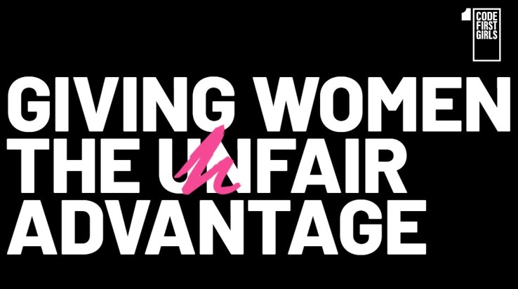

Pinterest is the go-to site for inspiration on almost any topic you could think of!
Pinterest is the go-to site for inspiration on almost any topic you could think of!
Want to re-style or redecorate your room? Pinterest.
Interested in finding new recipes? Pinterest.
Starting a new craft and want design ideas? Pinterest.
Simply sign-up/login, search, and pin items to your own unique boards!
 Future Learn can help you be inspired to try something new or improve skills you already have. They have lots of free courses and many you can do in your own time, meaning you can dip in and out when you have the time and inspiration.
Future Learn can help you be inspired to try something new or improve skills you already have. They have lots of free courses and many you can do in your own time, meaning you can dip in and out when you have the time and inspiration.
Click the image to head to their site or click here to find out more about how it works.
Want to start coding or learn a new coding language? Code First Girls have helped over 20,000 women learn how to code, from introducing them to HTML, CSS, and JavaScript, to teaching them Python and SLQ!
So if you're a woman and a student (or recent graduate) who wants to try something totally new and feels inspired to be a woman in tech, check out their new courses for 2021.